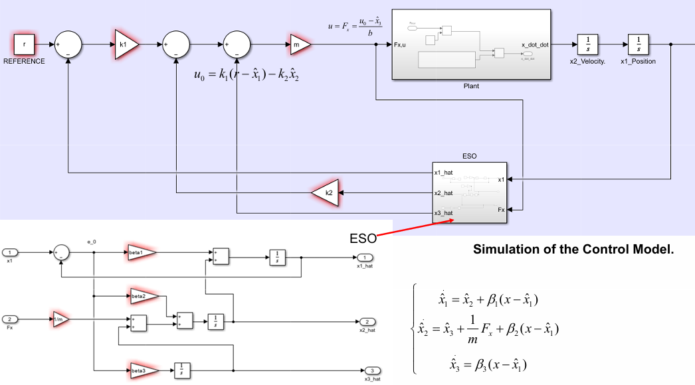
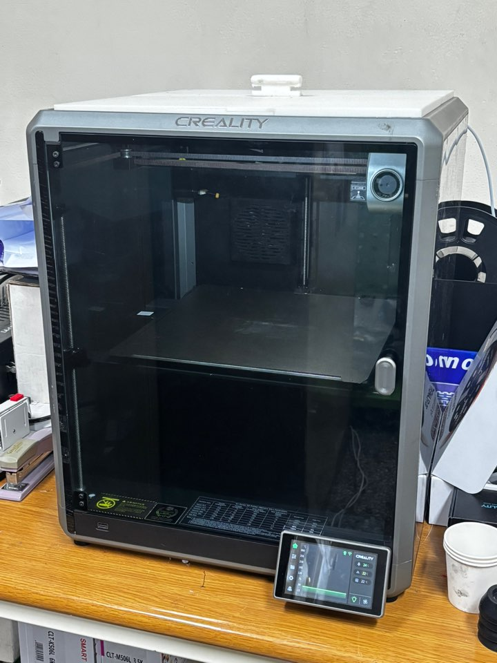

CAL
CAL
Control System Design
Controller design such as Active Disturbance Rejection Control (ADRC) and Sliding Mode Control (SMC), with performance verified through simulation.

Prof. Moon G. Joo's lab at Pukyong National University works on control system design, embedded robots and computer vision: 67 journal papers and 28 patents since 1997.

Controller design such as Active Disturbance Rejection Control (ADRC) and Sliding Mode Control (SMC), with performance verified through simulation.

Learning-based manipulation with robot arms, using reinforcement and imitation learning, and ROS-based autonomous navigation for mobile robots.

Visual recognition such as scene text recognition and VLM-based anomaly detection. Past work includes semi-supervised microstructure image segmentation and fish size measurement for smart fish farms.
The lab is equipped with robot arms, autonomous mobile robots and a 3D printer. If there is research you want to try, come and talk to us.



4 projects the lab is running now. 49 projects completed since 1993.